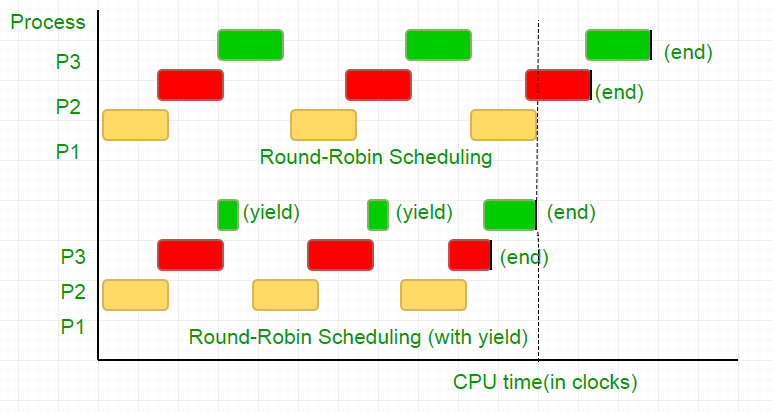

Problem: Given 2 process i and j, you need to write a program that can guarantee mutual exclusion between the two without any additional hardware support.
We strongly recommend to refer below basic solution discussed in previous article.
Peterson’s Algorithm for Mutual Exclusion | Set 1
We would be resolving 2 issues in the previous algorithm.
Wastage of CPU clock cycles
In layman terms, when a thread was waiting for its turn, it ended in a long while loop which tested the condition millions of times per second thus doing unnecessary computation. There is a better way to wait, and it is known as “yield”.
To understand what it does, we need to dig deep into how the Process scheduler works in Linux. The idea mentioned here is a simplified version of the scheduler, the actual implementation has lots of complications.
Consider the following example,
There are three processes, P1, P2 and P3. Process P3 is such that it has a while loop similar to the one in our code, doing not so useful computation, and it exists from the loop only when P2 finishes its execution. The scheduler puts all of them in a round robin queue. Now, say the clock speed of processor is 1000000/sec, and it allocates 100 clocks to each process in each iteration. Then, first P1 will be run for 100 clocks (0.0001 seconds), then P2(0.0001 seconds) followed by P3(0.0001 seconds), now since there are no more processes, this cycle repeats untill P2 ends and then followed by P3’s execution and eventually its termination.
This is a complete waste of the 100 CPU clock cycles. To avoid this, we mutually give up the CPU time slice, i.e. yield, which essentially ends this time slice and the scheduler picks up the next process to run. Now, we test our condition once, then we give up the CPU. Considering our test takes 25 clock cycles, we save 75% of our computation in a time slice. To put this graphically,

Considering the processor clock speed as 1MHz this is a lot of saving!.
Different distributions provide different function to achieve this functionality. Linux provides sched_yield().
void lock(int self)
{
flag[self] = 1;
turn = 1-self;
while (flag[1-self] == 1 &&
turn == 1-self)
// Only change is the addition of
// sched_yield() call
sched_yield();
}
Memory fence.
The code in earlier tutorial might have worked on most systems, but is was not 100% correct. The logic was perfect, but most modern CPUs employ performance optimizations that can result in out-of-order execution. This reordering of memory operations (loads and stores) normally goes unnoticed within a single thread of execution, but can cause unpredictable behaviour in concurrent programs.
Consider this example,
while (f == 0); // Memory fence required here print x;
In the above example, the compiler considers the 2 statements as independent of each other and thus tries to increase the code efficiency by re-ordering them, which can lead to problems for concurrent programs. To avoid this we place a memory fence to give hint to the compiler about the possible relationship between the statements across the barrier.
So the order of statements,
flag[self] = 1;
turn = 1-self;
while (turn condition check)
yield();
has to be exactly the same in order for the lock to work, otherwise it will end up in a deadlock condition.
To ensure this, compilers provide a instruction that prevent ordering of statements across this barrier. In case of gcc, its __sync_synchronize().
So the modified code becomes,
Full Implementation in C:
// Filename: peterson_yieldlock_memoryfence.c
// Use below command to compile:
// gcc -pthread peterson_yieldlock_memoryfence.c -o peterson_yieldlock_memoryfence
#include<stdio.h>
#include<pthread.h>
#include "mythreads.h"
int flag[2];
int turn;
const int MAX = 1e9;
int ans = 0;
void lock_init()
{
// Initialize lock by reseting the desire of
// both the threads to acquire the locks.
// And, giving turn to one of them.
flag[0] = flag[1] = 0;
turn = 0;
}
// Executed before entering critical section
void lock(int self)
{
// Set flag[self] = 1 saying you want
// to acquire lock
flag[self]=1;
// But, first give the other thread the
// chance to acquire lock
turn = 1-self;
// Memory fence to prevent the reordering
// of instructions beyond this barrier.
__sync_synchronize();
// Wait untill the other thread looses the
// desire to acquire lock or it is your
// turn to get the lock.
while (flag[1-self]==1 && turn==1-self)
// Yield to avoid wastage of resources.
sched_yield();
}
// Executed after leaving critical section
void unlock(int self)
{
// You do not desire to acquire lock in future.
// This will allow the other thread to acquire
// the lock.
flag[self]=0;
}
// A Sample function run by two threads created
// in main()
void* func(void *s)
{
int i = 0;
int self = (int *)s;
printf("Thread Entered: %d\n",self);
lock(self);
// Critical section (Only one thread
// can enter here at a time)
for (i=0; i<MAX; i++)
ans++;
unlock(self);
}
// Driver code
int main()
{
pthread_t p1, p2;
// Initialize the lock
lock_init();
// Create two threads (both run func)
Pthread_create(&p1, NULL, func, (void*)0);
Pthread_create(&p2, NULL, func, (void*)1);
// Wait for the threads to end.
Pthread_join(p1, NULL);
Pthread_join(p2, NULL);
printf("Actual Count: %d | Expected Count:"
" %d\n",ans,MAX*2);
return 0;
}
// mythread.h (A wrapper header file with assert
// statements)
#ifndef __MYTHREADS_h__
#define __MYTHREADS_h__
#include <pthread.h>
#include <assert.h>
#include <sched.h>
void Pthread_mutex_lock(pthread_mutex_t *m)
{
int rc = pthread_mutex_lock(m);
assert(rc == 0);
}
void Pthread_mutex_unlock(pthread_mutex_t *m)
{
int rc = pthread_mutex_unlock(m);
assert(rc == 0);
}
void Pthread_create(pthread_t *thread, const pthread_attr_t *attr,
void *(*start_routine)(void*), void *arg)
{
int rc = pthread_create(thread, attr, start_routine, arg);
assert(rc == 0);
}
void Pthread_join(pthread_t thread, void **value_ptr)
{
int rc = pthread_join(thread, value_ptr);
assert(rc == 0);
}
#endif // __MYTHREADS_h__
Output:
Thread Entered: 1 Thread Entered: 0 Actual Count: 2000000000 | Expected Count: 2000000000